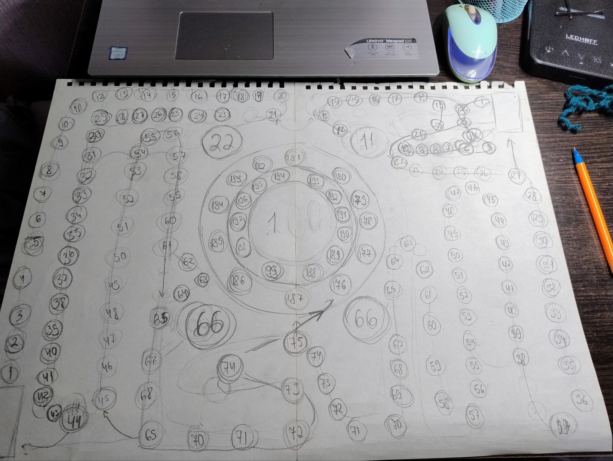
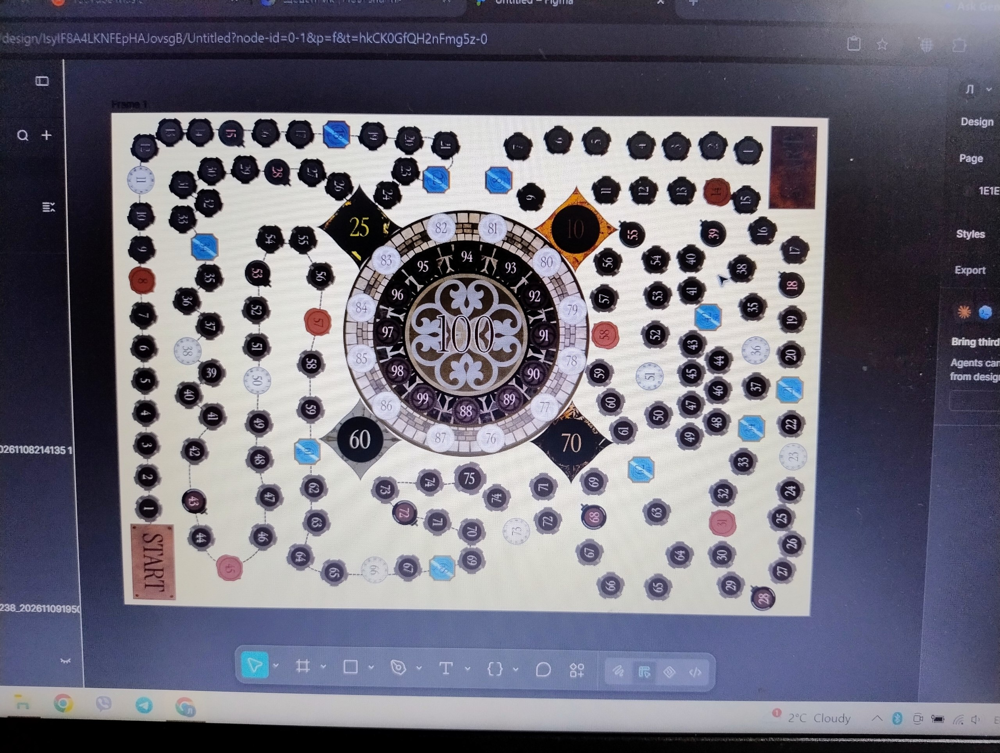
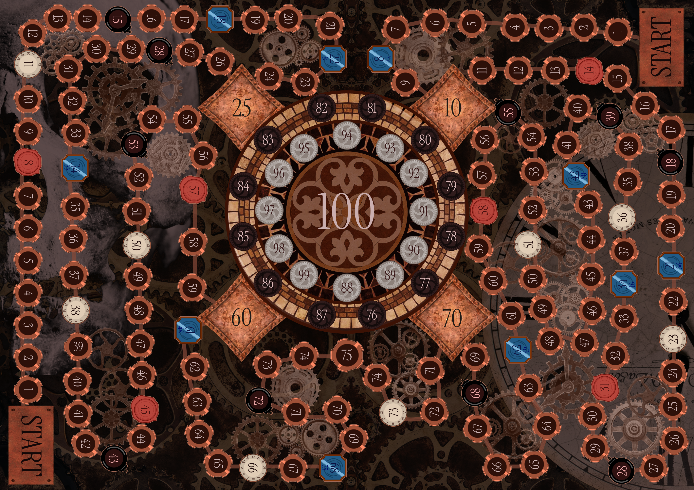
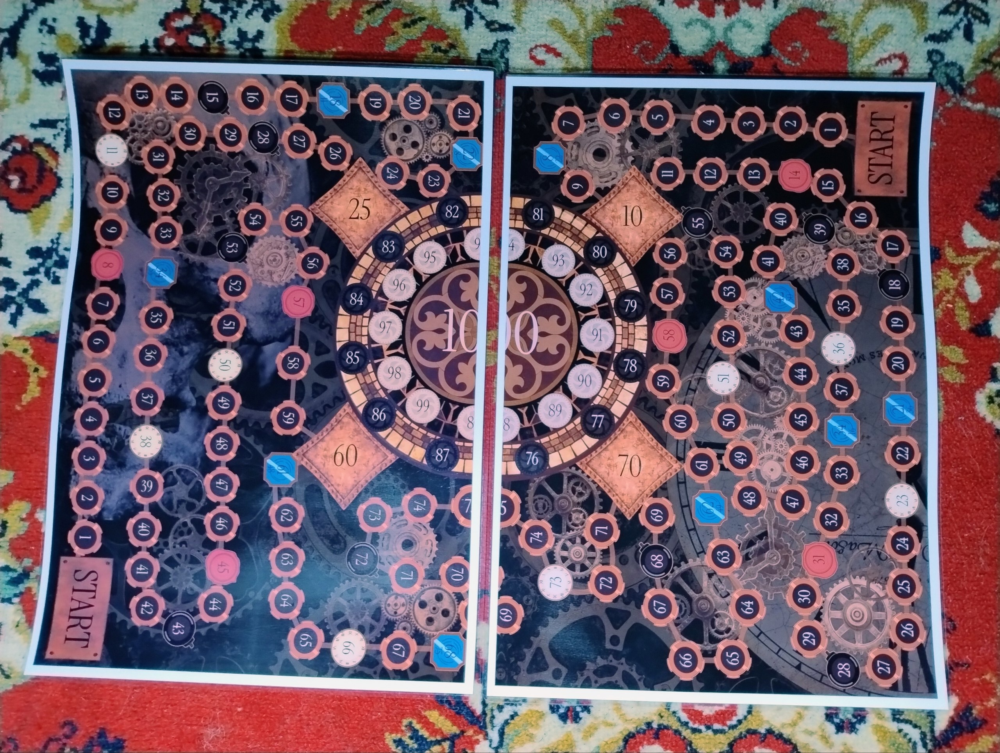
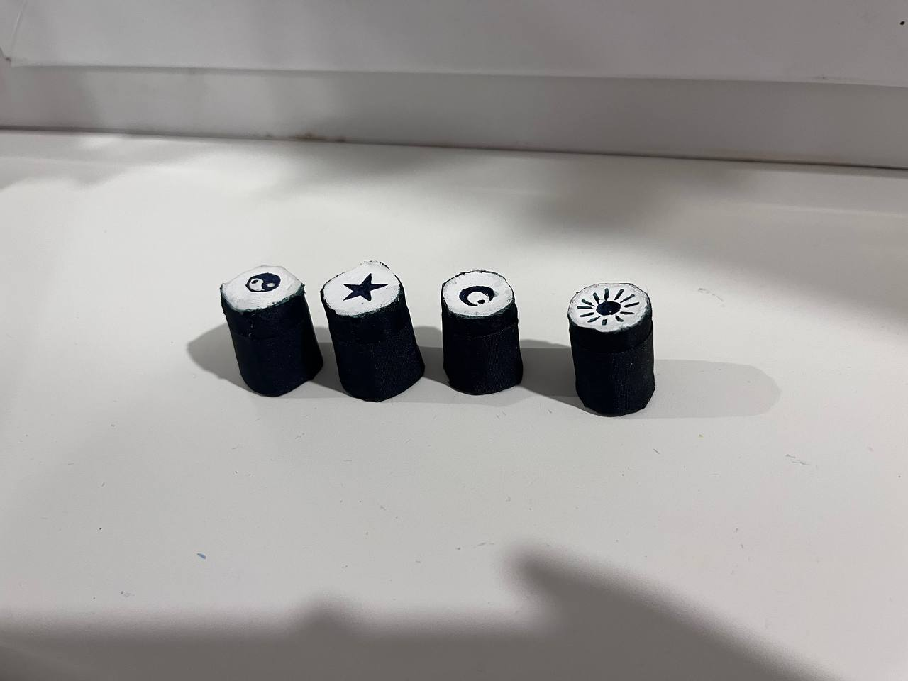
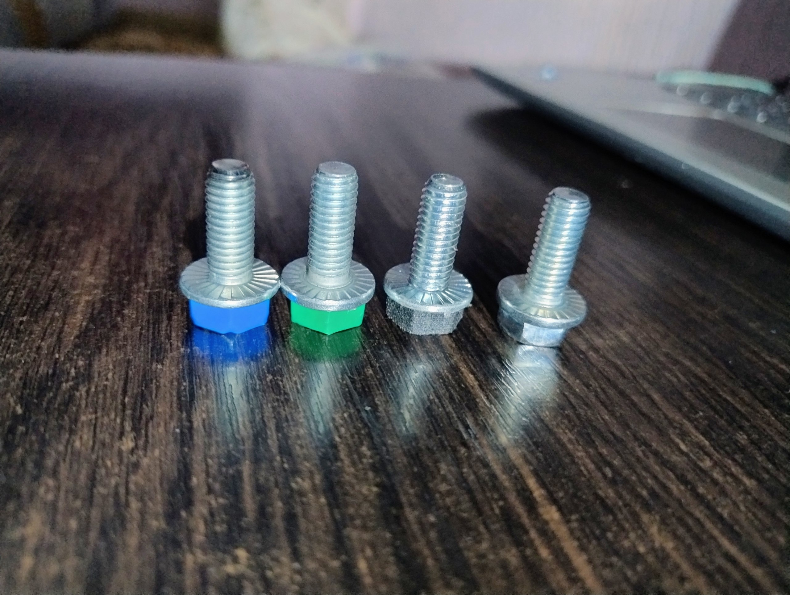

Про наш проєкт
З чого це почалось?
Це було довгострокове завдання на предмет СТЕМ. Ми не одразу придумали що саме будемо робити. Ми думали і про автоматичний полив рослин, і переробка паперу, але чомусь зупинились на настільній грі.
Спочатку вона мала бути зовсім іншою, проте потім у нас виникла думка... Що якщо зробити вікторину до цього? Ось тоді тоді пішла робота

Перший прототип був зовсім превентивний, ми тоді ще не знали які правила будуть, як буде виглядати сайт і взагалі чи щось вийде

Процес насправді був не з легких, бо треба було багато що прорахувати і мій перфекціонізм не дозволяв мені зробити те, чим я не буду довольна, але воно було того варте

З часом ми нарешті видрукували наше поле

Настав час до фішок, але ми толком не знали з чого їх робити. Перший прототип був з ковпачків

Ми вирішили, що це щось не то і продовжили шукати рішення. Знайшли гвинтики, які нагадують фішки
